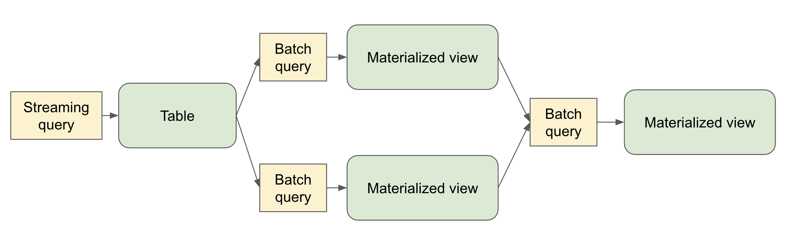

Spark Declarative Pipelines Programming Guide
- What is Spark Declarative Pipelines (SDP)?
- Key Concepts
- The
spark-pipelinesCommand Line Interface - Programming with SDP in Python
- The Spark Session in Python Pipelines
- Creating a Materialized View in Python
- Creating a Temporary View in Python
- Creating a Streaming Table in Python
- Loading Data from Streaming Sources in Python
- Loading Data from Batch Sources in Python
- Querying Tables Defined in a Pipeline in Python
- Creating Tables in For Loop in Python
- Using Multiple Flows to Write to a Single Target in Python
- Programming with SDP in SQL
- Change Data Capture (CDC) with Auto CDC
- Writing Data to External Targets with Sinks
- Important Considerations
What is Spark Declarative Pipelines (SDP)?
Spark Declarative Pipelines (SDP) is a declarative framework for building reliable, maintainable, and testable data pipelines on Apache Spark. SDP simplifies ETL development by allowing you to focus on the transformations you want to apply to your data, rather than the mechanics of pipeline execution.
SDP is designed for both batch and streaming data processing, supporting common use cases such as:
- Data ingestion from cloud storage (Amazon S3, Azure ADLS Gen2, Google Cloud Storage)
- Data ingestion from message buses (Apache Kafka, Amazon Kinesis, Google Pub/Sub, Azure EventHub)
- Incremental batch and streaming transformations
The key advantage of SDP is its declarative approach - you define what tables should exist and what their contents should be, and SDP handles the orchestration, compute management, and error handling automatically.

Quick install
A quick way to install SDP is with pip:
pip install pyspark[pipelines]
See the downloads page for more installation options.
Key Concepts
Flows
A flow is the foundational data processing concept in SDP which supports both streaming and batch semantics. A flow reads data from a source, applies user-defined processing logic, and writes the result into a target dataset.
For example, when you author a query like:
CREATE STREAMING TABLE target_table AS
SELECT * FROM STREAM source_table
SDP creates the table named target_table along with a flow that reads new data from source_table and writes it to target_table.
Datasets
A dataset is a queryable object that’s the output of one of more flows within a pipeline. Flows in the pipeline can also read from datasets produced in the pipeline.
- Streaming Table – a definition of a table and one or more streaming flows written into it. Streaming tables support incremental processing of data, allowing you to process only new data as it arrives.
- Materialized View – a view that is precomputed into a table. A materialized view always has exactly one batch flow writing to it.
- Temporary View – a view that is scoped to an execution of the pipeline. It can be referenced from flows within the pipeline. It’s useful for encapsulating transformations and intermediate logical entities that multiple other elements of the pipeline depend on.
Pipelines
A pipeline is the primary unit of development and execution in SDP. A pipeline can contain one or more flows, streaming tables, and materialized views. While your pipeline runs, it analyzes the dependencies of your defined objects and orchestrates their order of execution and parallelization automatically.
Pipeline Projects
A pipeline project is a set of source files that contain code definitions of the datasets and flows that make up a pipeline. The source files can be .py or .sql files.
It’s conventional to name pipeline spec files spark-pipeline.yml or spark-pipeline.yaml.
A YAML-formatted pipeline spec file contains the top-level configuration for the pipeline project with the following fields:
- name (Required) - The name of the pipeline project.
- libraries (Required) - The paths with the transformation source files in SQL or Python.
- storage (Required) – A directory where checkpoints can be stored for streaming tables within the pipeline.
- database (Optional) - The default target database for pipeline outputs. schema can alternatively be used as an alias.
- catalog (Optional) - The default target catalog for pipeline outputs.
- configuration (Optional) - Map of Spark configuration properties.
An example pipeline spec file:
name: my_pipeline
libraries:
- glob:
include: transformations/**
storage: file:///absolute/path/to/storage/dir
catalog: my_catalog
database: my_db
configuration:
spark.sql.shuffle.partitions: "1000"
The spark-pipelines init command, described below, makes it easy to generate a pipeline project with default configuration and directory structure.
The spark-pipelines Command Line Interface
The spark-pipelines command line interface (CLI) is the primary way to manage a pipeline.
spark-pipelines is built on top of spark-submit, meaning that it supports all cluster managers supported by spark-submit. It supports all spark-submit arguments except for --class.
spark-pipelines init
spark-pipelines init --name my_pipeline generates a simple pipeline project, inside a directory named my_pipeline, including a spec file and example transformation definitions.
spark-pipelines run
spark-pipelines run launches an execution of a pipeline and monitors its progress until it completes.
Since spark-pipelines is built on top of spark-submit, it supports all spark-submit arguments except for --class. For the complete list of available parameters, see the Spark Submit documentation.
It also supports several pipeline-specific parameters:
--spec PATH- Path to the pipeline specification file. If not provided, the CLI will look in the current directory and parent directories for one of the files:spark-pipeline.ymlspark-pipeline.yaml
-
--full-refresh DATASETS- List of datasets to reset and recompute (comma-separated). This clears all existing data and checkpoints for the specified datasets and recomputes them from scratch. -
--full-refresh-all- Perform a full graph reset and recompute. This is equivalent to--full-refreshfor all datasets in the pipeline. --refresh DATASETS- List of datasets to update (comma-separated). This triggers an update for the specified datasets without clearing existing data.
Refresh Selection Behavior
If no refresh options are specified, a default incremental update is performed. The refresh parameters are mutually exclusive:
--full-refresh-allcannot be combined with--full-refreshor--refresh--full-refreshand--refreshcan be used together to specify different behaviors for different datasets
Examples
# Basic run with default incremental update
spark-pipelines run
# Run with specific spec file
spark-pipelines run --spec /path/to/my-pipeline.yaml
# Full refresh of specific datasets
spark-pipelines run --full-refresh orders,customers
# Full refresh of entire pipeline
spark-pipelines run --full-refresh-all
# Run with custom Spark configuration
spark-pipelines run --conf spark.sql.shuffle.partitions=200 --driver-memory 4g
# Run on remote Spark Connect server
spark-pipelines run --remote sc://my-cluster:15002
spark-pipelines dry-run
spark-pipelines dry-run launches an execution of a pipeline that doesn’t write or read any data, but catches many kinds of errors that would be caught if the pipeline were to actually run. E.g.
- Syntax errors – e.g. invalid Python or SQL code
- Analysis errors – e.g. selecting from a table or a column that doesn’t exist
- Graph validation errors - e.g. cyclic dependencies
Since spark-pipelines is built on top of spark-submit, it supports all spark-submit arguments except for --class. For the complete list of available parameters, see the Spark Submit documentation.
It also supports the pipeline-specific --spec parameter (see description above in the run section).
Programming with SDP in Python
SDP Python definitions are defined in the pyspark.pipelines module.
Your pipelines implemented with the Python API must import this module. It’s recommended to alias the module to dp.
from pyspark import pipelines as dp
The Spark Session in Python Pipelines
In Spark 4.1, every pipeline file had to declare spark = SparkSession.active() explicitly. Starting in Spark 4.2, the framework injects spark into each pipeline file’s module namespace, so the explicit assignment is no longer required.
from pyspark import pipelines as dp
@dp.materialized_view
def my_view():
return spark.range(10)
Pipeline files that still include spark = SparkSession.active() continue to work correctly. However, if you do assign the session explicitly, SparkSession.active() is the only supported way to do so. For example, SparkSession.builder.config(...).getOrCreate() mutates session config, which is blocked in SDP.
Note that without the explicit assignment, many tools and editors may consider spark and undefined name. To address that, you can add spark: SparkSession at module scope. SDP will still inject the actual session before the module runs, so this only documents the type for static analysis.
from pyspark import pipelines as dp
from pyspark.sql import SparkSession
spark: SparkSession
@dp.materialized_view
def my_view():
return spark.range(10)
Creating a Materialized View in Python
The @dp.materialized_view decorator tells SDP to create a materialized view based on the results of a function that performs a batch read:
from pyspark import pipelines as dp
from pyspark.sql import DataFrame
@dp.materialized_view
def basic_mv() -> DataFrame:
return spark.table("samples.nyctaxi.trips")
The name of the materialized view is derived from the name of the function.
You can specify the name of the materialized view using the name argument:
from pyspark import pipelines as dp
from pyspark.sql import DataFrame
@dp.materialized_view(name="trips_mv")
def basic_mv() -> DataFrame:
return spark.table("samples.nyctaxi.trips")
Creating a Temporary View in Python
The @dp.temporary_view decorator tells SDP to create a temporary view based on the results of a function that performs a batch read:
from pyspark import pipelines as dp
from pyspark.sql import DataFrame
@dp.temporary_view
def basic_tv() -> DataFrame:
return spark.table("samples.nyctaxi.trips")
This temporary view can be read by other queries within the pipeline, but can’t be read outside the scope of the pipeline.
Creating a Streaming Table in Python
You can create a streaming table using the @dp.table decorator with a function that performs a streaming read:
from pyspark import pipelines as dp
from pyspark.sql import DataFrame
@dp.table
def basic_st() -> DataFrame:
return spark.readStream.table("samples.nyctaxi.trips")
Loading Data from Streaming Sources in Python
SDP supports loading data from all the formats supported by Spark Structured Streaming (spark.readStream).
For example, you can create a streaming table whose query reads from a Kafka topic:
from pyspark import pipelines as dp
from pyspark.sql import DataFrame
@dp.table
def ingestion_st() -> DataFrame:
return (
spark.readStream
.format("kafka")
.option("kafka.bootstrap.servers", "localhost:9092")
.option("subscribe", "orders")
.load()
)
Loading Data from Batch Sources in Python
SDP supports loading data from all the formats supported by Spark SQL (spark.read).
from pyspark import pipelines as dp
from pyspark.sql import DataFrame
@dp.materialized_view
def batch_mv() -> DataFrame:
return spark.read.format("json").load("/datasets/retail-org/sales_orders")
Querying Tables Defined in a Pipeline in Python
You can reference other tables defined in your pipeline in the same way you’d reference tables defined outside your pipeline:
from pyspark import pipelines as dp
from pyspark.sql import DataFrame
from pyspark.sql.functions import col
@dp.table
def orders() -> DataFrame:
return (
spark.readStream
.format("kafka")
.option("kafka.bootstrap.servers", "localhost:9092")
.option("subscribe", "orders")
.load()
)
@dp.materialized_view
def customers() -> DataFrame:
return (
spark.read
.format("csv")
.option("header", True)
.load("/datasets/retail-org/customers")
)
@dp.materialized_view
def customer_orders() -> DataFrame:
return (
spark.table("orders")
.join(
spark.table("customers"), "customer_id")
.select(
"customer_id",
"order_number",
"state",
col("order_datetime").cast("date").alias("order_date"),
)
)
)
@dp.materialized_view
def daily_orders_by_state() -> DataFrame:
return (
spark.table("customer_orders")
.groupBy("state", "order_date")
.count()
.withColumnRenamed("count", "order_count")
)
Creating Tables in For Loop in Python
You can use Python for loops to create multiple tables programmatically:
from pyspark import pipelines as dp
from pyspark.sql import DataFrame
from pyspark.sql.functions import collect_list, col
@dp.temporary_view()
def customer_orders() -> DataFrame:
orders = spark.table("samples.tpch.orders")
customer = spark.table("samples.tpch.customer")
return (
orders
.join(customer, orders.o_custkey == customer.c_custkey)
.select(
col("c_custkey").alias("custkey"),
col("c_name").alias("name"),
col("c_nationkey").alias("nationkey"),
col("c_phone").alias("phone"),
col("o_orderkey").alias("orderkey"),
col("o_orderstatus").alias("orderstatus"),
col("o_totalprice").alias("totalprice"),
col("o_orderdate").alias("orderdate"),
)
)
@dp.temporary_view()
def nation_region() -> DataFrame:
nation = spark.table("samples.tpch.nation")
region = spark.table("samples.tpch.region")
return (
nation
.join(region, nation.n_regionkey == region.r_regionkey)
.select(
col("n_name").alias("nation"),
col("r_name").alias("region"),
col("n_nationkey").alias("nationkey"),
)
)
# Extract region names from region table
region_list = spark.table("samples.tpch.region").select(collect_list("r_name")).collect()[0][0]
# Iterate through region names to create new region-specific materialized views
for region in region_list:
@dp.table(name=f"{region.lower().replace(' ', '_')}_customer_orders")
def regional_customer_orders(region_filter=region) -> DataFrame:
customer_orders = spark.table("customer_orders")
nation_region = spark.table("nation_region")
return (
customer_orders
.join(nation_region, customer_orders.nationkey == nation_region.nationkey)
.select(
col("custkey"),
col("name"),
col("phone"),
col("nation"),
col("region"),
col("orderkey"),
col("orderstatus"),
col("totalprice"),
col("orderdate"),
)
.filter(f"region = '{region_filter}'")
)
Using Multiple Flows to Write to a Single Target in Python
You can create multiple flows that append data to the same dataset:
from pyspark import pipelines as dp
from pyspark.sql import DataFrame
# create a streaming table
dp.create_streaming_table("customers_us")
# define the first append flow
@dp.append_flow(target = "customers_us")
def append_customers_us_west() -> DataFrame:
return spark.readStream.table("customers_us_west")
# define the second append flow
@dp.append_flow(target = "customers_us")
def append_customers_us_east() -> DataFrame:
return spark.readStream.table("customers_us_east")
Programming with SDP in SQL
Creating a Materialized View in SQL
The basic syntax for creating a materialized view with SQL is:
CREATE MATERIALIZED VIEW basic_mv
AS SELECT * FROM samples.nyctaxi.trips;
Creating a Temporary View in SQL
The basic syntax for creating a temporary view with SQL is:
CREATE TEMPORARY VIEW basic_tv
AS SELECT * FROM samples.nyctaxi.trips;
Creating a Streaming Table in SQL
When creating a streaming table, use the STREAM keyword to indicate streaming semantics for the source:
CREATE STREAMING TABLE basic_st
AS SELECT * FROM STREAM samples.nyctaxi.trips;
Querying Tables Defined in a Pipeline in SQL
You can reference other tables defined in your pipeline:
CREATE STREAMING TABLE orders
AS SELECT * FROM STREAM orders_source;
CREATE MATERIALIZED VIEW customers
AS SELECT * FROM customers_source;
CREATE MATERIALIZED VIEW customer_orders
AS SELECT
c.customer_id,
o.order_number,
c.state,
date(timestamp(int(o.order_datetime))) order_date
FROM orders o
INNER JOIN customers c
ON o.customer_id = c.customer_id;
CREATE MATERIALIZED VIEW daily_orders_by_state
AS SELECT state, order_date, count(*) order_count
FROM customer_orders
GROUP BY state, order_date;
Using Multiple Flows to Write to a Single Target in SQL
You can create multiple flows that append data to the same target:
-- create a streaming table
CREATE STREAMING TABLE customers_us;
-- define the first append flow
CREATE FLOW append_customers_us_west
AS INSERT INTO customers_us
SELECT * FROM STREAM(customers_us_west);
-- define the second append flow
CREATE FLOW append_customers_us_east
AS INSERT INTO customers_us
SELECT * FROM STREAM(customers_us_east);
Change Data Capture (CDC) with Auto CDC
Many source systems emit a stream of change events rather than a snapshot of the current data: each record describes an insert, update, or delete to a row, identified by a key. Applying these events correctly to a target table by hand is tricky. Matching events to existing rows, applying them in the right order, and handling out-of-order and duplicate events without corrupting the table is the hard part.
Auto CDC does this automatically. Given a source of change events and a rule for identifying and ordering them, SDP maintains a target streaming table that always reflects the latest state for each key.
Keys and Sequencing
Auto CDC needs two things to make sense of a change feed:
- The keys are the columns that identify a row across events. Events sharing a key describe the same logical row over time. In a customer feed, that is usually the customer id.
- The sequencing expression says what order the events for a key happened in. Its value for an event is that event’s sequence value, and Auto CDC treats the highest sequence value it has seen for a key as the most recent state. Change feeds normally carry something suitable already: a monotonically increasing version or commit number, or a commit timestamp.
Sequencing matters because a change feed does not have to arrive in order. It is what lets Auto CDC apply events by their intended order rather than the order they happen to land in.
What Auto CDC Does
Given a stream of change events, Auto CDC keeps the target table in sync with the source:
- Inserts and updates - For each key, the event with the highest sequence value wins. If no row exists for the key, it’s inserted; if one exists, it’s overwritten with the latest values.
- Deletes - Events that match a supplied delete condition remove the corresponding row from the target.
- Out-of-order and duplicate events - Events don’t have to arrive in order, and the source does not need to be de-duplicated. An event whose sequence value is older than the state already applied for its key is discarded, and a re-delivered event converges to the same result.
This section covers Slowly Changing Dimensions (SCD) Type 1, where the target keeps only the current version of each row, with no history of prior values. SCD Type 2 is also supported; SPARK-58570 tracks documenting it.
For example, take these change events. They are not in version order - the last event for id 1 is a stale re-delivery of version 1, arriving after version 2:
| id | name | version | op |
|---|---|---|---|
| 1 | alice | 1 | UPSERT |
| 2 | bob | 1 | UPSERT |
| 1 | alicia | 2 | UPSERT |
| 2 | bob | 2 | DELETE |
| 3 | carol | 1 | UPSERT |
| 1 | alice | 1 | UPSERT |
Auto CDC keyed on id and sequenced by version produces this target table. It drops the op column, and omits the internal metadata column Auto CDC appends (see Considerations):
| id | name | version |
|---|---|---|
| 1 | alicia | 2 |
| 3 | carol | 1 |
By key: id 1 was inserted as alice, then updated to alicia at version 2, and the stale version 1 event arriving last is discarded because a higher sequence value has already been applied; id 2 was inserted and then deleted at version 2, so it is gone; id 3 was inserted and never changed.
Requirements
- The target must be a streaming table, not a materialized view or an external table. Define it with
create_streaming_table(Python) orCREATE STREAMING TABLE(SQL), or declare it together with the flow using the combined SQL form below. Definition order within the source file does not matter, since the graph is resolved after everything is registered. - The target’s format must support row-level operations. Auto CDC maintains the target with MERGE, so the table must be backed by a connector implementing the DSv2
SupportsRowLevelOperationsinterface. A target that does not fails at startup withAUTOCDC_TARGET_DOES_NOT_SUPPORT_MERGE. Spark’s built-in file formats, including Parquet, do not qualify; see Choosing a Target Format. - The target must have exactly one input flow. An Auto CDC flow cannot share a target with other flows; a target fed by more than one flow, one of which is Auto CDC, fails with
AUTOCDC_MULTIPLE_FLOWS_TO_TARGET. This rules out the fan-in pattern shown in “Using Multiple Flows to Write to a Single Target” above. - The source must be a streaming source (read with
spark.readStreamin Python orSTREAM(...)in SQL). CDC is an incremental operation over newly arriving change events. - The catalog’s metadata must survive between runs, since each incremental run re-resolves the tables an earlier run created. This is a property of the connector, not of setting
spark.sql.catalog.*. Spark’s default session catalog keeps metadata only for the life of the session, so a secondspark-pipelines runagainst it fails withLOCATION_ALREADY_EXISTS; use a catalog whose metastore persists. - The flow must specify keys (one or more columns that identify a row) and a sequencing expression (used to order events per key).
The sequencing expression may be any SQL expression over the source columns, not just a bare column reference; sequencing by a struct such as (commit_ts, seq_no), or by a cast, is fine. It must satisfy three constraints:
- Its type must be orderable. A non-orderable type fails with
AUTOCDC_MICROBATCH_VALIDATION.NON_ORDERABLE_SEQUENCE. - It must never be null. A microbatch containing a null sequence value fails with
AUTOCDC_MICROBATCH_VALIDATION.NULL_SEQUENCErather than guessing an order. - Its result type must stay the same across runs. The expression may change between incremental runs, but not its type, or recorded values would stop being comparable; that fails with
AUTOCDC_INVALID_STATE.SEQUENCING_TYPE_DRIFTand needs a full refresh.
Within a microbatch, ties on the sequence value for a key are broken arbitrarily. For deterministic results, use an expression that is unique per event within a key.
Defining an Auto CDC Flow in Python
Use create_auto_cdc_flow to write change events into a target streaming table, which is defined with create_streaming_table.
from pyspark import pipelines as dp
from pyspark.sql import DataFrame
# The source of change events: a streaming read of the CDC feed.
@dp.table
def cdc_events() -> DataFrame:
return spark.readStream.table("cdc_source")
# The target that Auto CDC keeps in sync. It must be a streaming table, in a
# catalog whose format supports row-level operations (see "Choosing a Target
# Format" below).
dp.create_streaming_table("customers")
# The Auto CDC flow that applies the change events to the target.
dp.create_auto_cdc_flow(
target="customers",
source="cdc_events",
keys=["id"],
sequence_by="version",
apply_as_deletes="op = 'DELETE'",
except_column_list=["op"],
stored_as_scd_type=1,
)
create_auto_cdc_flow accepts the following arguments:
| Parameter | Required | Description |
|---|---|---|
target |
Yes | Name of the target streaming table that receives the changes. It must be defined in the pipeline. |
source |
Yes | Name of the CDC source dataset to stream change events from. |
keys |
Yes | The column or columns that uniquely identify a row. A list of column names (strings) or Column objects, given as unqualified identifiers: for example "id" or col("id"), but not "source.id". |
sequence_by |
Yes | An expression used to order change events for each key. The highest value wins. A SQL expression string or a Column. |
apply_as_deletes |
No | A boolean expression identifying events that represent deletes. Matching rows are removed from the target. A SQL expression string or a Column. |
column_list |
No | The columns to include in the target. Mutually exclusive with except_column_list. |
except_column_list |
No | The columns to exclude from the target; all other columns are included. Mutually exclusive with column_list. Commonly used to drop operation/metadata columns such as op. |
stored_as_scd_type |
No | The SCD type of the target. Pass 1 (or "1") for the Type 1 behavior described here. Type 2 is also accepted; see SPARK-58570. |
name |
No | The name of the flow. Defaults to the target table name. |
spark_conf |
No | Spark configuration to apply while the flow runs. Overrides configuration set on the destination, the pipeline, or the cluster. |
With neither column_list nor except_column_list, every source column is written to the target - including the operation column and any other change-feed bookkeeping. That is rarely right for a CDC feed, so the examples here drop op with except_column_list=["op"]. See Selecting Which Columns Land in the Target.
keys, column_list, and except_column_list must be given as unqualified column identifiers: "id" or col("id"), but not "cdc_events.id" or col("cdc_events.id"). (sequence_by is not restricted this way; it may be any expression over the source columns.)
Defining an Auto CDC Flow in SQL
SQL provides two forms. The first attaches an Auto CDC flow to an already-declared streaming table:
CREATE STREAMING TABLE customers;
CREATE FLOW customers_cdc AS AUTO CDC INTO customers
FROM STREAM(cdc_events)
KEYS (id)
APPLY AS DELETE WHEN op = 'DELETE'
SEQUENCE BY version
COLUMNS * EXCEPT (op);
The second declares the streaming table and its Auto CDC flow together:
CREATE STREAMING TABLE customers
FLOW AUTO CDC
FROM STREAM(cdc_events)
KEYS (id)
APPLY AS DELETE WHEN op = 'DELETE'
SEQUENCE BY version
COLUMNS * EXCEPT (op);
FROM STREAM(source) and KEYS (col, ...) come first, in that order. The remaining clauses may appear in any order after them:
FROM STREAM(source)- the streaming CDC source. Required, first.KEYS (col, ...)- the key columns that identify a row. Required, second.SEQUENCE BY expr- the expression that orders events per key. Required.APPLY AS DELETE WHEN condition- marks events that represent deletes. Optional.COLUMNS (col, ...)orCOLUMNS * EXCEPT (col, ...)- selects or excludes columns. Optional; if omitted, all source columns are written.STORED AS SCD TYPE 1- selects the SCD type. Optional; defaults to Type 1 when omitted, which is the behavior described here.
CREATE FLOW ... AS AUTO CDC INTO also accepts an optional COMMENT, and CREATE STREAMING TABLE ... FLOW AUTO CDC accepts IF NOT EXISTS.
Choosing a Target Format
Auto CDC applies each microbatch to the target with a MERGE, so the target has to be a table that supports row-level updates and deletes. Concretely, its connector must implement the DSv2 SupportsRowLevelOperations interface.
Spark’s built-in file-based formats do not. Pointing an Auto CDC flow at a plain Parquet target - which is what a create_streaming_table("customers") with no format produces - fails when the flow starts:
[AUTOCDC_TARGET_DOES_NOT_SUPPORT_MERGE] Cannot start AutoCDC flow: the target table
`spark_catalog`.`default`.`customers` (format: parquet) does not support row-level
operations. AutoCDC requires a target backed by a connector that supports MERGE.
Auto CDC needs a table provider that implements row-level operations, configured as a catalog in the pipeline. Lakehouse connectors such as Apache Iceberg are the usual choice; consult the connector’s documentation for whether it implements the DSv2 row-level operation interfaces and how to register its catalog. Supporting the MERGE INTO SQL statement is not on its own sufficient: a connector can implement MERGE through its own planner extension without implementing the DSv2 interface Auto CDC requires. The catalog must also persist metadata across runs, per Requirements.
The examples below use a catalog named lakehouse to stand in for such a connector. Add the catalog to the generated spark-pipeline.yml - substituting the catalog name and connector class - without disturbing the name, storage, and libraries values spark-pipelines init already wrote:
catalog: lakehouse
database: cdc_demo
configuration:
spark.sql.catalog.lakehouse: <your connector's catalog class>
End-to-End Example
This example builds a small pipeline that ingests customer change events and maintains a customers table holding the latest state of each customer. Running it in three passes shows updates and deletes applied incrementally, out-of-order events reconciled within a batch, and a stale re-delivery in a later run discarded against committed state.
It reads the change feed from a directory of JSON files, so appending a batch and re-running shows the incremental behavior. The target uses the lakehouse catalog from Choosing a Target Format; substitute a row-level-operation-capable catalog.
Create a pipeline project:
spark-pipelines init --name cdc_demo
cd cdc_demo
spark-pipelines init seeds transformations/ with example_python_materialized_view.py and example_sql_materialized_view.sql. Delete them so only the CDC datasets run, then edit spark-pipeline.yml to add the catalog as shown in Choosing a Target Format, and put the following in transformations/customers_cdc.py:
from pyspark import pipelines as dp
from pyspark.sql import DataFrame
from pyspark.sql.types import (
IntegerType, LongType, StringType, StructField, StructType)
# An explicit schema keeps the streaming JSON read from having to infer one.
SCHEMA = StructType([
StructField("id", IntegerType()),
StructField("name", StringType()),
StructField("version", LongType()),
StructField("op", StringType()),
])
# Ingest the raw change events. In a real pipeline this would read from Kafka,
# cloud storage, or a database CDC feed; here it tails a directory of JSON files.
@dp.table
def cdc_events() -> DataFrame:
return spark.readStream.schema(SCHEMA).json("file:///tmp/cdc_demo/events")
# Declare the target streaming table that Auto CDC maintains.
dp.create_streaming_table("customers")
# Apply the change events to the target.
dp.create_auto_cdc_flow(
target="customers",
source="cdc_events",
keys=["id"],
sequence_by="version",
apply_as_deletes="op = 'DELETE'",
except_column_list=["op"],
stored_as_scd_type=1,
)
Write the first batch of change events, inserting two customers:
mkdir -p /tmp/cdc_demo/events
cat > /tmp/cdc_demo/events/batch1.json <<'EOF'
{"id": 1, "name": "alice", "version": 1, "op": "UPSERT"}
{"id": 2, "name": "bob", "version": 1, "op": "UPSERT"}
EOF
Run the pipeline:
spark-pipelines run
customers now holds both rows, with the op column excluded:
| id | name | version |
|---|---|---|
| 1 | alice | 1 |
| 2 | bob | 1 |
Now add a second batch. It updates id 1, deletes id 2, and inserts id 3. The two events for id 1 also arrive out of order within the batch - the newer value first, its stale predecessor after:
cat > /tmp/cdc_demo/events/batch2.json <<'EOF'
{"id": 1, "name": "alicia", "version": 2, "op": "UPSERT"}
{"id": 1, "name": "alice", "version": 1, "op": "UPSERT"}
{"id": 2, "name": "bob", "version": 2, "op": "DELETE"}
{"id": 3, "name": "carol", "version": 1, "op": "UPSERT"}
EOF
Run the pipeline again. Because customers is a streaming table, this run processes only the new file:
spark-pipelines run
| id | name | version |
|---|---|---|
| 1 | alicia | 2 |
| 3 | carol | 1 |
alice became alicia, bob is gone, and carol was inserted. The two id 1 events landed in the same batch out of order; Auto CDC collapsed them to the highest sequence value per key before applying, so the row is alicia, not the earlier alice.
Ordering also holds across runs, against state already committed. Add a third batch that re-delivers the original id 1 event at version 1, as a re-sending source might:
cat > /tmp/cdc_demo/events/batch3.json <<'EOF'
{"id": 1, "name": "alice", "version": 1, "op": "UPSERT"}
EOF
Run once more:
spark-pipelines run
| id | name | version |
|---|---|---|
| 1 | alicia | 2 |
| 3 | carol | 1 |
The table is unchanged. This time the stale event is alone in its batch, so there is no newer event to supersede it within the batch; instead Auto CDC compares its version against the state already recorded for id 1 and discards it, because version 1 is below the committed version 2. Applied in arrival order, this event would have wrongly reverted id 1 to alice.
How-Tos
Handling Deletes
Change feeds usually mark deletes with an operation column or a tombstone flag rather than removing the row. Give Auto CDC a boolean expression that identifies delete events with apply_as_deletes (Python) or APPLY AS DELETE WHEN (SQL):
dp.create_auto_cdc_flow(
target="customers",
source="cdc_events",
keys=["id"],
sequence_by="version",
apply_as_deletes="op = 'DELETE'",
)
When an event matches the delete condition, the row for its key is removed from the target. If no delete condition is supplied, every event is treated as an insert or update.
Selecting Which Columns Land in the Target
CDC feeds often carry metadata columns (the operation type, a timestamp, source offsets) that do not belong in the target table. Use except_column_list / COLUMNS * EXCEPT to drop them, or column_list / COLUMNS to name exactly the columns to keep. The two options are mutually exclusive.
# Keep everything except the operation column.
dp.create_auto_cdc_flow(
target="customers",
source="cdc_events",
keys=["id"],
sequence_by="version",
except_column_list=["op"],
)
# Or keep only an explicit set of columns.
dp.create_auto_cdc_flow(
target="customers",
source="cdc_events",
keys=["id"],
sequence_by="version",
column_list=["id", "name"],
)
Handling Out-of-Order and Duplicate Events
The source need not be sorted or de-duplicated. Auto CDC orders events for a key by their sequence value - both within a microbatch and against state from earlier runs - so a late or repeated event lands correctly, as the end-to-end example above demonstrates. Just choose a sequence_by expression that strictly orders changes for a key, such as a monotonically increasing version number or a commit timestamp.
Using a Composite Key
Pass multiple columns to keys when a single column doesn’t uniquely identify a row:
dp.create_auto_cdc_flow(
target="orders",
source="order_events",
keys=["region", "order_id"],
sequence_by="event_ts",
)
Changing the Key Set
The set and types of keys are part of the flow’s persisted state. Changing keys across incremental runs - renaming, swapping, adding, removing, or changing the type of a key column - is not supported: the run fails with AUTOCDC_INVALID_STATE.KEY_SCHEMA_DRIFT. To change the key set, fully refresh the target table so it is recomputed from scratch:
spark-pipelines run --full-refresh customers
Auto CDC Considerations
Beyond the Requirements above, two engine details are worth knowing:
- Reserved column names - Auto CDC owns the
__spark_autocdc_column-name prefix; it projects an internal__spark_autocdc_metadatacolumn onto the target, and SCD Type 2 adds more. The source cannot contain any column whose name begins with__spark_autocdc_; a collision fails when the flow is constructed. Treat these as engine details rather than columns to query. - Declaring a schema explicitly - When the target is declared separately -
create_streaming_table(schema=...)in Python, or a standaloneCREATE STREAMING TABLEin SQL - the declared schema must currently include the reserved metadata column, because it has to match the flow’s output schema exactly. The combinedCREATE STREAMING TABLE ... FLOW AUTO CDCform takes no column list at all; it infers the schema from the flow. Either way, letting Auto CDC derive the schema avoids the issue. SPARK-58118 tracks relaxing it.
Writing Data to External Targets with Sinks
Sinks in SDP provide a way to write transformed data to external destinations beyond the default streaming tables and materialized views. Sinks are particularly useful for operational use cases that require low-latency data processing, reverse ETL operations, or writing to external systems.
Sinks enable a pipeline to write to any destination that a Spark Structured Streaming query can be written to, including, but not limited to, Apache Kafka and Azure Event Hubs.
Creating and Using Sinks in Python
Working with sinks involves two main steps: creating the sink definition and implementing an append flow to write data.
Creating a Kafka Sink
You can create a sink that streams data to a Kafka topic:
from pyspark import pipelines as dp
from pyspark.sql.functions import to_json, struct
dp.create_sink(
name="kafka_sink",
format="kafka",
options={
"kafka.bootstrap.servers": "localhost:9092",
"topic": "processed_orders"
}
)
@dp.append_flow(target="kafka_sink")
def kafka_orders_flow() -> DataFrame:
return (
spark.readStream.table("customer_orders")
.select(
col("order_id").cast("string").alias("key"),
to_json(struct("*")).alias("value")
)
)
Sink Considerations
When working with sinks, keep the following considerations in mind:
- Streaming-only: Sinks currently support only streaming queries through
append_flowdecorators - Python API: Sink functionality is available only through the Python API, not SQL
- Append-only: Only append operations are supported; full refresh updates reset checkpoints but do not clean previously computed results
Important Considerations
Python Considerations
- SDP evaluates the code that defines a pipeline multiple times during planning and pipeline runs. Python functions that define datasets should include only the code required to define the table or view.
- The function used to define a dataset must return a
pyspark.sql.DataFrame. - Never use methods that save or write to files or tables as part of your SDP dataset code.
- When using the
forloop pattern to define datasets in Python, ensure that the list of values passed to theforloop is always additive.
Examples of Spark SQL operations that should never be used in SDP code:
collect()count()pivot()toPandas()save()saveAsTable()start()toTable()
SQL Considerations
- The
PIVOTclause is not supported in SDP SQL.